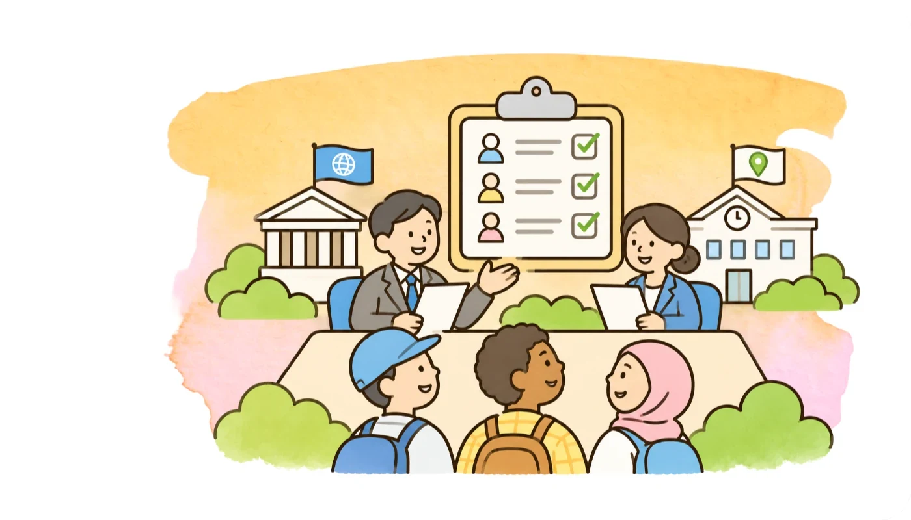
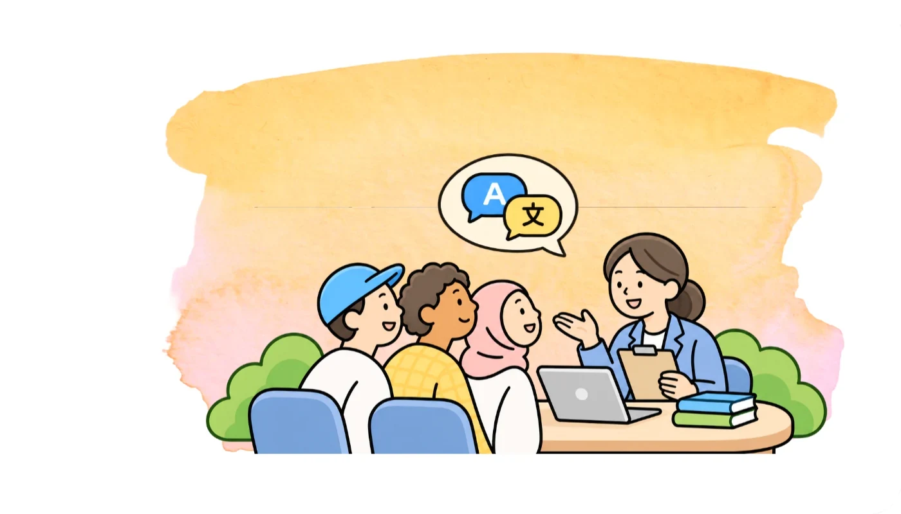

HOW ZUVILAND WORKS
From first step to future
From a transparent public pathway to a settled life, a growing career
and a return home: five solutions designed around people.
-

-card1.webp)
01Public selection link
A trusted first step
Partner governments and Korean local
governments select workers
directly through a
transparent public channel. We support partnership
design and pre-departure training, so workers can
arrive without
excessive debt. -
-card2.webp)
-card2.webp)
02K-Farm Campus
A safe start to life in Korea
Housing, training and daily support in one place.
Standard living
conditions and a 30-day intensive
adaptation programme help every
worker settle in. -
-card3.webp)
-card3.webp)
03K-Farm Career Pass
Experience that becomes a
careerWork, training and skills are recorded step by step
and carried into later
seasons. Two paths are open:
a farming future in Korea, or new
opportunities
back home. -

-card4.webp)
04Well-being care
Care that starts with the heart
Native-language counselling and step-by-step
support, from before
departure through work and
return. We notice difficulties early, so
every worker
can work with dignity. -
-card5.webp)
-card5.webp)
05Integrated management system
One record, from field to office
Six kinds of data — attendance, skills, safety,
Korean language, well-
being and return —
managed in one place. A system for local
governments and a career platform for workers
reduce paperwork and
keep support continuous.